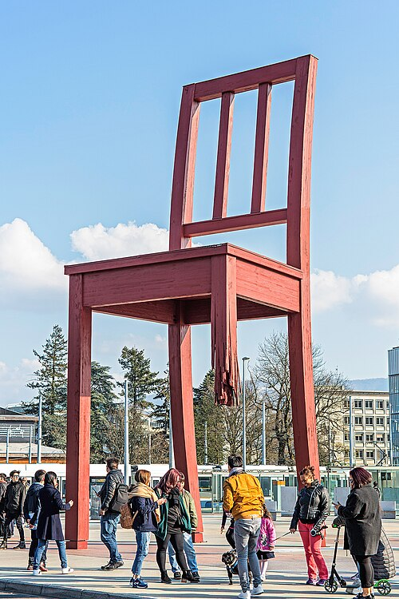
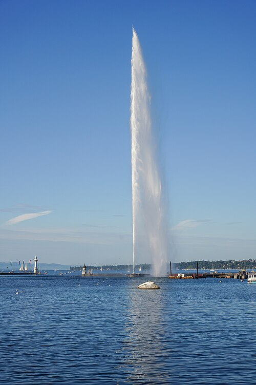
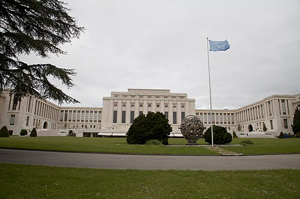

This map shows 19 of the most-searched sights in Geneva as photo spots, ranked by how often people search for them: Broken Chair, Jet d'Eau, Flower Clock, Palace of Nations and Reformation Wall lead the list. Every spot has a pin on the subject and a phone icon showing where to stand, with tips for shooting it on your phone: which lens to use, how to frame it, a settings tip and the best time of day. Directions and Navigate buttons take you to the standing point on foot or by public transport. 3 spots are free to view; the full map is for members.
The 3 free photo spots
1Broken Chair

Broken Chair is a giant wooden chair with one leg snapped off halfway, and it is easy to read at a glance, even from across a busy square. Swiss artist Daniel Berset designed it and carpenter Louis Genève built it. It stands 12 metres high and uses 5.5 tonnes of wood. It stands across the street from the Palace of Nations and symbolises opposition to land mines and cluster bombs. Handicap International first put it up in August 1997, meant for three months. Strong public support kept it there until 2005, when the square was remodelled. It returned to the same place in February 2007.
It photographs well because the chair and the Palace of Nations can share one frame. That gives you a simple picture with a clear message: a huge, damaged piece of furniture in front of a seat of diplomacy. The best-known view is from the edge of the Place des Nations, facing the main gate. Step back far enough to keep the whole chair and its leg in the picture. If the fountain is running, the jets can add a foreground, but it only runs in warmer months and when switched on, so don't count on it. The square is open and windswept, with traffic around it, and it is sometimes used for protests, which can bring banners or crowds into your shot. For a different picture, go right up to the chair and shoot steeply upwards at the shortened leg, which shows the scale well.
Where it is: It stands on the Place des Nations in Geneva, across the street from the Palace of Nations and in front of its main entrance.
Shooting it on your phone
Lens: Start with the default lens (1x) from where you stand, so the chair and the palace gates look natural together. Use the ultra-wide (0.5x) only if you are close and want the whole chair in the frame. If you are far back, the telephoto (2x or more) can crop in on the chair and the gate.
Where to stand: Stand in Place des Nations (edge of the square facing the main UN gate). The whole chair in the foreground with the Palais des Nations and its gates behind it, with the fountain jets optionally in the foreground. At the edge of the square facing the main UN gate. Adjust your position only if the chair looks too small or too large in the frame. If the fountain is running, you can let the jets sit in the foreground.
Framing: Switch on gridlines and keep the chair's legs against the vertical lines, with the phone held level so the chair does not lean. Put the chair slightly off-centre and let the palace fill the space beside it. For a second picture, walk up to the chair and tilt the phone upwards at the shortened leg, or shoot from across the square for a wide view that shows how big the monument is.
Settings tip: Tap on the chair to focus, then slide the exposure down slightly if the sky is bright so the wood keeps its detail. If you are close, the ultra-wide (0.5x) can stretch and bend the edges, so keep the chair away from the corners of the frame.
Best time: Early morning, when fewer people walk through the frame.
2Jet d'Eau

The Jet d'Eau is a huge fountain at the point where Lake Geneva exits as the Rhône, and it is one of Geneva's best-known landmarks. It shoots about 500 litres of water every second up to 150 metres, leaving the nozzle at around 200 km/h. It is easy to photograph because the white column stands alone against the sky and the lake, with nothing else competing for attention. The present fountain dates from 1951, and the jet has stood at this spot since 1891. The first one, in 1886, reached only about 30 metres. You walk out to it along a stone jetty from the left bank of the lake, which puts you very close to the base. The fountain runs by day all year, except in frost or very strong wind. From spring to autumn it also runs in the evening, lit by 21 lights. Keep a dry cloth handy for your phone lens. Check the official site before you go if you are hoping to see it running.
Where it is: The Jet d'Eau stands at the point where Lake Geneva exits as the Rhône, reached via a stone jetty from the left bank of the lake.
Shooting it on your phone
Lens: Use the ultra-wide lens (0.5x) at this distance, because the jet is very tall and you are close. The default lens (1x) works for a tighter shot of the spray at the base or the top of the column. The telephoto lens (2x-5x, depending on your phone) is good for details of the plume against the sky.
Where to stand: Stand about 20 m north-east of the subject, at the phone icon on the map, and face south-west. The fountain is directly in front of you and the lake spreads out behind it.
Framing: Hold the phone upright (portrait) so the full height of the column fits, and tilt the phone up slowly rather than stepping back. Switch on gridlines and place the jet along one vertical line, with a little lake or sky either side. For a different view, turn round and frame the jet from a longer distance along the jetty or lakeshore.
Settings tip: Tap on the white column to set focus and pull the exposure slider down a little so the bright water keeps its detail. Try a Live Photo or motion capture to catch the spray falling. Wipe the lens often, as it picks up mist quickly.
Best time: In the evening from spring to autumn, when the fountain is lit; use night mode and hold the phone steady against the rail or your body. By day, check the wind before you go, since a change in direction can soak the jetty.
4Palace of Nations

The Palace of Nations is the Geneva home of the United Nations, and it began life as the headquarters of the League of Nations. It was built between 1929 and 1938 by five architects who combined their ideas after a competition with 377 entries. When it was completed in 1936, it was the second-largest building complex in Europe by volume, behind only Versailles. With later extensions the complex is about 600 metres long. It stands in Ariana Park, which Gustave de Revilliod de la Rive left to the city in 1890 on condition that it stays open to the public.
The building is mostly hidden behind a security wall and trees, so the best street-level view is from Place des Nations. From there you see the main entrance and façade framed by the row of member-state flags. The giant Broken Chair sculpture stands in the foreground, which makes an easy way to show scale and give the photo a clear subject. If you have time, Parc de l'Ariana is a good alternative. It shows the Palace across the gardens, with fountains, sculptures and Lake Geneva behind.
Keep your phone level so the long façade does not lean. Let the flags and the chair fill the foreground, then step a little to either side until the entrance sits neatly between them. The Palace is a working diplomatic site, so stay on the public side of the barriers and follow any signs about photography.
Where it is: The Palace of Nations stands in Ariana Park, in Geneva, overlooking Lake Geneva.
Shooting it on your phone
Lens: Start with the default lens (1x) to capture the flags, the façade and the Broken Chair together. Switch to ultra-wide (0.5x) if you want to stand close to the sculpture and make it look large. Use the telephoto (2x-5x, depending on your phone) for a tighter shot of the entrance between the flags.
Where to stand: Stand in Place des Nations (south side, facing the main entrance across the approach). The Palace's main entrance and façade framed by the row of member-state flags, with the giant Broken Chair sculpture in the foreground. Face the main entrance across the approach. From here the photo shows the Palace's main entrance and façade framed by the row of member-state flags, with the giant Broken Chair in the foreground.
Framing: Turn on gridlines and line up the façade with the horizontal lines so the building looks straight. Put the Broken Chair low in the frame and the flags and entrance behind it. For a different view, Parc de l'Ariana shows the Palace across the gardens with Lake Geneva behind.
Settings tip: Tap on the façade to set focus, then slide the exposure down a little if the sky is bright, so the building keeps its detail. Take a few shots with people walking past the sculpture to show scale.
Best time: Choose a time when the sun is high enough to light the façade from behind you, such as the middle of the day or the afternoon.
16 more spots for members
These spots are on the map as grey numbered pins. Where to stand, the phone tips, photos and directions for them come with Explorer membership.
- 3Flower Clock · members
- 5Reformation Wall · members
- 6Jardin Anglais · members
- 7St. Pierre Cathedral · members
- 8Place du Bourg-de-Four · members
- 9Brunswick Monument · members
- 10Geneva Botanical Garden · members
- 11Pont du Mont-Blanc · members
- 12International Red Cross and Red Crescent Museum · members
- 13Bâtiment des Forces motrices · members
- 14Grand Théâtre de Genève · members
- 15Musée d'Art et d'Histoire · members
- 16Pierres du Niton · members
- 17Île Rousseau · members
- 18Russian Church, Geneva · members
- 19Paddle steamer Genève · members
Get every spot with Explorer membership
Explorer opens every spot on every map in the library: where to stand, how to frame it on your phone and how to get there, plus the Xdatrys Maps app with maps saved on your phone for use without signal. $9.99 a month or $59.99 a year; cancel any time.
Join Explorer Compare free and Explorer
Not ready to join?
Get Pocket Lens, our free daily smartphone travel photography newsletter.
Free, and you can unsubscribe at any time. If the form does not show, sign up on our newsletter page.
Questions
What are the top photo spots in Geneva?
The first three on this map are Broken Chair, Jet d'Eau and Flower Clock. They are ranked by how often people search for them. The full map has 19.
Where should I stand to photograph Broken Chair?
Stand in Place des Nations (edge of the square facing the main UN gate). Start with the default lens (1x) from where you stand, so the chair and the palace gates look natural together.
When is the best time to photograph the Jet d'Eau?
In the evening from spring to autumn, when the fountain is lit; use night mode and hold the phone steady against the rail or your body. By day, check the wind before you go, since a change in direction can soak the jetty.
How do I get to the Palace of Nations?
Walk north towards the flags and the Broken Chair to reach the Place des Nations view on the south side of the Palace's approach, and the main entrance is straight ahead.
Credits
Map data © OpenStreetMap contributors (ODbL); base map built with Protomaps from OpenStreetMap data. Photos from Wikimedia Commons, credited under each photo with their licence. Background reading for the free spots: Broken Chair, Jet d'Eau, Palace of Nations (Wikipedia, CC BY-SA). Access rules and opening times change: check before you go.